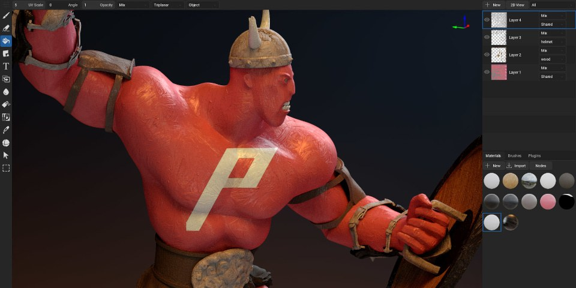

ArmorPaint 1.0 正式脫離 Early Access：C 重寫、UV/雕刻、動畫預覽與本地 Neural Nodes
ArmorPaint 1.0 以 C 重寫核心，提升大資產與高解析圖層互動效能，並加入基礎雕刻、UV 編輯、skinned mesh timeline、AI upscale 與 photo-to-material 等功能。

其他 DCC ★★★★★
完整分析
DCC 工作流
1.0 不只是版本號更新，而是底層重寫與 painting、UV、sculpt、animation preview、AI nodes 同時擴張，工作流覆蓋度明顯提高。
製作價值
對遊戲美術最值得測的是高解析多層專案的互動速度、PBR 輸出、Blender/Unity/UE Live Link，以及本地 AI 的 photo-to-material 品質。
導入測試
正式導入前仍要驗 Live Link 插件版本、PSD/Substance 互通需求、色彩管理與團隊共用材質規範，避免只因低價就替換成熟管線。